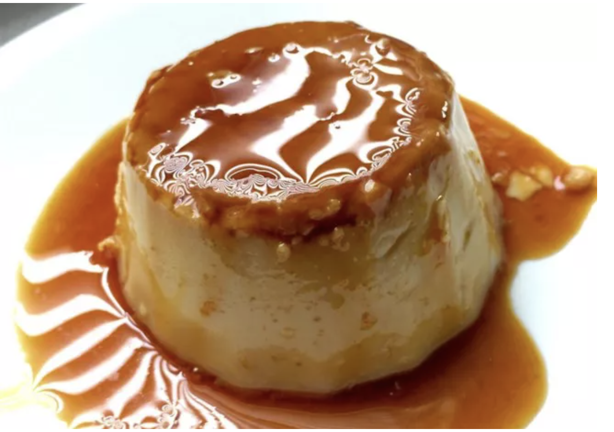

Spanish Flan

Description
The Spanish Flan is easy to make and delicious! Perfect desert when you have guests or for a Friday night.
Ingredients
- Sugar
- Eggs
- Sweetened Condensed Milk
- Evaporated milk
- Vanilla
Steps
- Preheat the oven to 350 degrees F (175 degrees C).
- Melt sugar in a medium saucepan over medium-low heat until liquefied and golden in color. Carefully pour hot syrup into a 9-inch round glass baking dish, turning the dish to evenly coat the bottom and sides; set aside.
- Beat eggs in a large bowl. Add condensed milk, evaporated milk, and vanilla; beat until smooth. Pour egg mixture into the baking dish; cover with aluminum foil.
- Bake in preheated oven for 1 hour. Let cool completely.
- To serve, carefully invert onto a rimmed serving plate; let caramel sauce flow over flan.